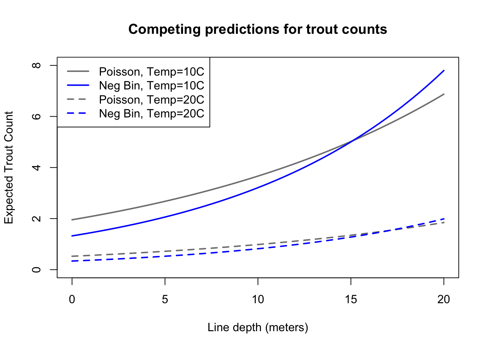

Code
set.seed(1204)
depth3 <- rep(seq(10,20,2),each=5)
temp <- rep(seq(3,27,6),times=6)
mu <- exp(1+0.15*depth3-0.15*temp)
trout4 <- rnbinom(30,size=1.5,mu=mu)
trout.naive <- glm(trout4~depth3+temp,family=poisson)
summary(trout.naive)The count regression models we have studied so far have all used the Poisson distribution, but there are plenty of other probability distributions which create count data: the negative binomial, the hypergeometric distribution, etc. When might we want to consider a different distributional assumption for our count data?
The main drawback of the Poisson distribution is also its strength: simplicity. In particular, the Poisson distribution uses only one parameter, \(\lambda\), which is both the mean and the variance of the distribution. The choice of a Poisson distribution limits our ability to model count processes in which the variance is different than the mean. And these processes are all around us! The majority of real-world count processes that I’ve personally studied have variances greater than their means, though your own experiences will vary.
When our data show more variance than predicted by our distributional assumption, we label it overdispersion, which we may contrast with underdispersion and equidispersion. This section focuses on two ways to model overdispersed count data, and the next section covers some additional cases where the overdispersion is caused specifically by an unexpected number of zero counts.
Before introducing the solution, let me identify the problem in more concrete terms. Why should overdispersion trouble us?
First, it affects the standard errors for the betas. Similar to how heteroskedasticity affects OLS regression, overdispersion causes us to be “overconfident” in our betas, and the true standard errors should generally be wider than our maximum likelihood estimates would suggest. When we properly account for the effects of overdispersion, we may find that our betas have much wider confidence intervals, or even that they are no longer found to be significant, and perhaps we should remove them from the model (or be left with no model at all!)
Second, it affects our deviance statistics. Deviance is a likelihood-based measure, and we compute these likelihoods using the Poisson PMF. If our data are not actually Poisson-distributed, then that will change the overall likelihood of our parameter choices, including the two anchor points of the null model and the saturated model. In general, overdispersion inflates our deviance, meaning that our models will look worse than they really are! A model which does very well at explaining overdispersed data will often still fail a deviance test.
Finally, overdispersion does not necessarily bias our coefficients. Depending on our distributional assumptions, our guess for the mean of the distribution (and therefore the point estimates of the betas) remains unbiased, simply subject to larger variance. However, I should caution that some of our strategies to handle overdispersion involve making new distributional assumptions which make the Poisson-based betas biased, misspecified, or irrelevant.
Let’s now compare and contrast two different solutions to this problem.
Let’s begin by sticking to the Poisson distribution just as closely as we can, to see how much of the problem can be solved while “giving up” as little as possible of our new modeling framework.
The GLMs we’ve studied so far have been solved through the method of maximum likelihood estimation (MLE). MLE maximizes a likelihood function, which in turn is a composite of the density or mass functions for each individual observation.
If we want to “off-road” a bit with distributions that aren’t exactly Poisson, or binomial, or any other known distribution, we can no longer use exact MLE methods to solve for our betas. Instead, statisticians in the 1970s introduced a new set of functions which aren’t quite likelihoods but share many of the same properties, called quasi-likelihood functions. These quasi-likelihoods specify a specific relationship between the mean and variance of each observation: \(\mathbb{V}[y_i] = f(\mu_i)\). For example, we might specify that the variance of our count data is equal to the square of the mean: \(\mathbb{V}[y_i] = \mu_i^2\). The quasi-likelihood function will impose this constraint, and any given set of parameters will be judged by how closely the resulting means and unit deviances fit our assumptions.1
I sense we are in danger of getting too abstract, so let me return to another fishing story.
Imagine that our fishing guide is determined to better understand the question of how the depth of the fishing line affects how many lake trout can be caught. They swear to control as many variables as they can. They won’t even catch fish; they will use a collection of underwater cameras, underwater thermometers, and active sonar fishfinders, placed at carefully controlled depths, in order to run a balanced experiment (our guide might have become a little obsessive.) At precise combinations of depth and temperature, they will use their instrument rigs to count all of the trout within visual range.
The guide’s prior hypothesis is that while line depth has been shown to be a significant predictor of trout catches, perhaps the supposed “depth” effect has actually been a “temperature” effect all along. After all, in most conditions, deeper lake waters are colder than shallower lake waters. With this experimental design, the multicollinearity is removed and we can disentangle the two effects.
| Depth | \(3^\circ\) C | \(9^\circ\) C | \(15^\circ\) C | \(21^\circ\) C | \(27^\circ\) C |
|---|---|---|---|---|---|
| 10 m | 5 | 6 | 3 | 0 | 0 |
| 12 m | 6 | 1 | 4 | 0 | 0 |
| 14 m | 19 | 7 | 2 | 1 | 0 |
| 16 m | 24 | 3 | 4 | 0 | 0 |
| 18 m | 13 | 13 | 7 | 0 | 1 |
| 20 m | 11 | 0 | 5 | 2 | 2 |
Although the data are recorded in a 5x6 table above, we could easily re-express this data in a manner suitable for regression analysis: 30 rows of a response variable (trout caught on camera), with their corresponding pair of depth and temperature as predictors. Inspecting the table we see some superficial evidence of both depth and temperature trends.
When we run a log-link Poisson regression on this data, we see the following results:
set.seed(1204)
depth3 <- rep(seq(10,20,2),each=5)
temp <- rep(seq(3,27,6),times=6)
mu <- exp(1+0.15*depth3-0.15*temp)
trout4 <- rnbinom(30,size=1.5,mu=mu)
trout.naive <- glm(trout4~depth3+temp,family=poisson)
summary(trout.naive)| Parameter | Estimate | Std Error | p-value |
|---|---|---|---|
| \(\beta_0\) (Intercept) | 1.985 | 0.418 | <0.0001 |
| \(\beta_1\) (Line depth) | 0.063 | 0.025 | 0.013 |
| \(\beta_2\) (Temperature) | -0.132 | 0.014 | <0.0001 |
| \(\,\) | |||
| Null deviance | 197.7 | (29 df) | |
| Model deviance | 67.8 | (27 df) | |
| AIC | 145.0 |
At first glance, this is an encouraging model. Our predictors are both significant at most conventional thresholds. Our two-predictor model significantly outperforms the null model (a chi-square difference of 130 on 2 df is certainly significant).
However, if we look closer we might find some room for doubt. Our model deviance is highly significant (a chi-square value of 67.8 on 27 df carries a p-value of <0.0001), meaning that we are far away from the best model possible. This could be due to omitted variable biases, but the fishing guide has tried hard to control for confounding effects. And if we examine the raw data, we see that the last row with the deepest recordings saw fewer trout than the three rows above it. These low trout totals don’t match what we know about the Poisson distribution (which doesn’t produce a lot of extreme values), and seems to conflict with the significant predictor for line depth. It could be a nonlinear effect of depth, or it could be overdispersed data.
Perhaps now the fishing guide decides to run a quasi-likelihood Poisson model, allowing for the variance of the data to be some multiple of the mean:
\[\mathbb{V}[y_i]=\phi \mu_i\]
The constant \(\phi\) is a dispersion parameter, and here it measures whether the data is overdispersed (\(\phi \gt 1\)), underdispersed (\(\phi \lt 1\)), or equidispersed (\(\phi = 1\)). True Poisson data would be equidispersed. Please beware! For different distributions, a dispersion parameter may act differently or be named differently. In the next section we will consider a case where the dispersion parameter is named \(\theta\) (theta) and equidispersion is only reached when \(\theta = \infty\).
We can fit the same regression equation as before using quasi-likelihood techniques, but since we do not actually have a distributional assumption (just a relationship between mean and variance), we cannot solve for the betas using maximum likelihood techniques, and generally use iterative algorithms to maximize the quasi-likelihood instead. Depending on the software implementation, likelihood-based measures such as AIC or deviance may or may not be reported. In R, for example, we would see the following output:2
trout.quasi <- glm(trout4~depth3+temp,family=quasipoisson)
summary(trout.quasi)
exp(trout.quasi$coefficients)-1| Parameter | Estimate | Std Error | p-value |
|---|---|---|---|
| \(\beta_0\) (Intercept) | 1.985 | 0.606 | 0.003 |
| \(\beta_1\) (Line depth) | 0.063 | 0.037 | 0.096 |
| \(\beta_2\) (Temperature) | -0.132 | 0.020 | <0.0001 |
| \(\,\) | |||
| Null deviance | 197.7 | (29 df) | |
| Model deviance | 67.8 | (27 df) | |
| AIC | N/A | ||
| \(\,\) | |||
| Dispersion parameter | 2.10 |
We should notice several features of the regression output above:
The parameter estimates are exactly the same as the standard Poisson regression output shown earlier. The quasi-likelihood model has not changed our estimates of the response mean for each combination of predictors, just the response variance.
The standard errors are almost 50% larger than before, which in turn has a noticeable impact on our findings of significance. The p-value for line depth has grown from just under 1% to just under 10%, and might be found insignificant depending on our preferred thresholds.
The null deviance and model deviance are the same as before. Since the adoption of a dispersion parameter materially changes our metric of deviance, we may assume that this software tool simply does not report a quasi-likelihood deviance.
Similarly, the AIC of the model is unreported in this software implementation.
We see that \(\phi \approx 2.10\), meaning the data are mildly overdispersed. The variance for each observation is estimated to be over twice its predicted mean.
From this regression, the expert fisher might conclude that temperature is certainly a helpful factor for predicting the presence and number of lake trout. They do seem to prefer colder waters. We may still interpret the coefficients the same way we did for a standard Poisson regression, and so we would associate a one-degree Celsius increase in temperature with an \(e^{\hat{\beta}_2} - 1 \approx e^{-0.132} - 1 \approx 12.3\%\) reduction in trout populations. We find only marginal evidence of a separate depth effect, with no certainty that it exists.
What have we lost from this technique, what have we kept, and what have we gained? Depending on your priorities, this quasi-likelihood technique might or might not be a good fit for your analysis.
We have lost the ability to estimate the probability of observing particular counts. We do not have a distributional assumption anymore. In this data, our data are not actually Poisson-distributed, they simply are created in a Poisson-like manner from some unknown distribution with a wider variance. So we cannot answer specific questions like, “At \(5^\circ\) and \(25\,m\), what’s the probability of observing zero trout?” Likewise, we cannot simulate more data, at least not parametrically (we might try resampling techniques instead).
We no longer have a strong theoretical foundation for model comparison techniques such as AIC or deviance tests.
We retain the ability to predict the mean of \(Y\) for every combination of \(X\)s, or for new combinations not yet seen in the data.
We retain some ability to create a range of likely values for \(Y\) for every combination of \(X\)s, since we at least know the estimated variance/standard deviation.
We retain the log-link of the standard Poisson model, the interpretation that it gives to these coefficients, and the ability to measure their sign, size, and significance.
We gain the ability to directly estimate the amount of overdispersion in our data.
We gain the ability to produce a set of adjusted standard errors that should provide a much more honest sense of whether our predictors help improve model fit.
So if you are interested primarily in using regression to understand the structural forces behind your data, i.e. which predictors might actually be causal or at least correlative factors, quasi-likelihood techniques might help you properly account for the extra noise caused by overdispersion. If you are more interested in forecasting or measuring tail probabilities, this technique might not be helpful.
As you can see, classical statisticians live by the sword (of parametric inference) and die by the sword. We place a great deal of emphasis on understanding the proper functional form(s) which created the observed data. When we remove a distributional assumption, even to improve model fit, we lose many of the tools to which we are now accustomed.
However, discrepancies between the mean and variance of our data don’t require us to abandon the idea of distributions entirely; we could simply assume a different distribution than the Poisson, choosing one that relates our mean and variance with more flexibility. When the Poisson seems dubious, the most common alternative distribution is the negative binomial.
Readers may have first seen the negative binomial in the context of combinatorics, where it helps us compute the probability of observing a certain number of failures before achieving a fixed number of successes (or vice versa). With that context, the use of a negative binomial distribution to model count data seems rather odd: if we observe 10 lake trout over the course of one hour, how do we split this one number into a certain number of successes or failures? Let me attempt two answers:
Answer A: Combinatorics after all. Imagine that each lake trout secretly knows itself to be a “success trout” or a “failure trout”. The proportion of success trout at any one observation area will be determined by our predictors, such as temperature or depth or motor noise. We somehow only notice the “failure” trout and never notice the “success” trout, but our count totals stop as soon as a fixed number of “success trout” slip by us. The varying counts in our data are partly due to the predictors altering the probabilities of success and failures, and partly due to random sampling uncertainties.
Answer B: Don’t overthink it. The negative binomial produces non-negative integers, which are a good fit for count data, just like the Poisson. Unlike the Poisson, the negative binomial has two parameters, which allows it much more flexibility in its shape and spread. Although the parameters are typically written as a probability and a number of desired successes, the density can be rewritten using alternate parameters, one being the mean (like \(\lambda\) for the Poisson), and another which works with the first parameter to jointly define the variance. In short, it fits better.
The first answer is attractive in its rigor but a little odd and abstract, without any guarantee of describing real-world processes. The second answer is eminently pragmatic, but also completely divorced from theoretical motivation. For those readers still left unsatisfied, I have saved a special third answer!
This last result is important because of how often it lines up with real-world truths. The Poisson distribution actually is a good fit for many real-world count processes, but it relies on strict homogeneity, meaning that each new observation comes from exactly the same Poisson process. In the real world, there are often many types of local clustering or omitted variables which violate this assumption. But if we impose some light assumptions on the type of heterogeneity, then we can show that the resulting counts can still be understood and modeled through the lens of a different distribution, the negative binomial.
Let’s re-parameterize the negative binomial to fit our needs:
Let \(Y\) be a random variable conditionally distributed as a total number of failures before a fixed number of successes in a series of negative binomial trials, conditioned on a set of predictors \(\boldsymbol{X}\). Then we might write,
\[P(Y=y_i|\boldsymbol{X}=\boldsymbol{x}_i) = \left(\begin{array}{c} y_i + r - 1 \\ y_i \end{array}\right) p_i^r (1 - p_i)^{y_i}\]
Where \(p_i\) is the probability of success within each trial and \(r\) is the fixed number of successes needed to complete each trial. With these parameters we have,
\[\mathbb{E}[Y_i|\boldsymbol{X}]= \frac{r (1-p_i)}{p_i} \quad \textrm{and} \quad \mathbb{V}[Y_i|\boldsymbol{X}] = \frac{r(1 - p_i)}{p_i^2}\]
However, we may re-parameterize the model by writing \(\mu_i = r(1 - p_i)/p_i\), in which case,
\[\mathbb{E}[Y_i|\boldsymbol{X}]= \mu_i \quad \textrm{and} \quad \mathbb{V}[Y_i|\boldsymbol{X}] = \mu_i + \frac{\mu_i^2}{r}\]
We’ve now succeeded in re-parameterizing the negative binomial such that one parameter completely determines the mean, and can vary from observation to observation according to our predictors, while the other parameter only helps to control the variance. The overall variance will depend upon our predictors (since it’s also a function of the mean \(\mu_i\)), but the second parameter \(r\) is a constant and can be estimated once for the entire model. Although \(r\) initially meant the number of required successes, it now helps to define the amount of overdispersion. Consider once again the statement for variance:
\[\mathbb{V}[Y_i|\boldsymbol{X}] = \mu_i + \frac{\mu_i^2}{r}\]
You can see that when \(r\) is small, then the estimated variance for a certain observation will be much greater than the fitted mean \(\mu_i\), while if \(r\) was very large, then the second term would become vanishingly small and the variance would be equal to the mean (equidispersion). In R, the MASS::glm.nb function uses the term ‘Theta’ for \(r\).
Let’s say that our fishing guide re-runs their quasi-likelihood analysis with a new negative binomial assumption and a log link. They find,
library(MASS)
trout.nb <- glm.nb(trout4~depth3+temp)
summary(trout.nb)
exp(trout.nb$coefficients)-1| Parameter | Estimate | Std Error | p-value |
|---|---|---|---|
| \(\beta_0\) (Intercept) | 1.646 | 0.718 | 0.022 |
| \(\beta_1\) (Line depth) | 0.089 | 0.044 | 0.044 |
| \(\beta_2\) (Temperature) | -0.137 | 0.021 | <0.0001 |
| \(\,\) | |||
| Null deviance | 91.417 | (29 df) | |
| Model deviance | 32.913 | (27 df) | |
| AIC | 132.53 | ||
| \(\,\) | |||
| Theta (r) | 3.32 |
These results seem very promising. Let’s review the conclusions found above, and compare them when possible to the Poisson and quasi-likelihood models for the same data discussed above:
Our betas have the same interpretation as before. The coefficients haven’t changed much in their size. We would say that every meter deeper increases expected trout counts by 9.3%, while every degree Celsius warmer decreases expected trout counts by 12.8%.3
Both predictors are now found to be significant at a 5% level. We have certainly gone back and forth on whether line depth really plays an important role, so prudence might counsel us against a firm conclusion…
However, note that the model deviance is now insignificant. With our new distributional assumption, GLM techniques do not find our model to perform significantly worse than the best, most overfit negative binomial model possible. Since we can’t make many more improvements, I might be tempted to trust the significance of line depth: it was only found insignificant in worse-specified models.
Further, note that the AIC of 132.5 is much better than the Poisson AIC of 145.0
You’ll notice that the coefficients of this negative binomial were similar but not identical to the Poisson and quasi-likelihood coefficients. With most datasets you might find similar outcomes. Solving the maximum likelihood equations for these two models can be likened to solving a weighted sum of squares. The weights in the Poisson case are proportional to the expected variance of each observation, while the weights in the negative binomial case are proportional to the square of the expected variance. This difference in weighting schemes alters the degree to which outliers and extreme values affect the final beta estimates.
nbtest1 <- data.frame(depth3=seq(0,20,0.1),temp=10)
nbtest2 <- data.frame(depth3=seq(0,20,0.1),temp=20)
plot(seq(0,20,0.1),predict(trout.naive,newdata=nbtest1,type='response'),
type='l',ylim=c(0,8),col='grey50',lwd=2,
ylab='Expected Trout Count',xlab='Line depth (meters)',
main='Competing predictions for trout counts')
lines(seq(0,20,0.1),predict(trout.naive,newdata=nbtest2,type='response'),
type='l',col='grey50',lwd=2,lty=2)
lines(seq(0,20,0.1),predict(trout.nb,newdata=nbtest1,type='response'),
type='l',col='#0000ff',lwd=2)
lines(seq(0,20,0.1),predict(trout.nb,newdata=nbtest2,type='response'),
type='l',col='#0000ff',lwd=2,lty=2)
legend(x='topleft',legend=c('Poisson, Temp=10C','Neg Bin, Temp=10C','Poisson, Temp=20C','Neg Bin, Temp=20C'),
lwd=2,lty=c(1,1,2,2),col=c('grey50','#0000ff','grey50','#0000ff')) 
Comparing the predictions of these two models, we see that they are relatively similar, as we could guess from their similar log link coefficients. In datasets with more overdispersion you’ll notice a larger difference between their predictions, and in general, the negative binomial would be preferred over the Poisson in such instances. Whether the negative binomial would be preferred over a quasi-likelihood model is very contextual, and particularly depends on whether you have a prior hypothesis as to the real relationship between the mean and the variance of your data (in which case a quasi-likelihood model might be preferred).
Here we must leave our fisher to their final determination that line depth does matter when selecting a spot for trout fishing, though perhaps not as much as water temperature. Next (in ?sec-zeroinflatedmodels) we will turn to a special type of over- or under-dispersion which describes data with an unexpectedly large or small number of zero counts.
“Unit deviance” is a term for each observation’s individual contribution to the overall model deviance, and you can think of it as a generalized form of a squared residual from an OLS regression.↩︎
Specifically from the stats::glm function. Other R packages implement quasi-likelihood models differently.↩︎
As a reminder, we reach such conclusions by exponentiating the coefficients and subtracting one.↩︎